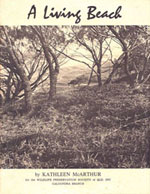

- The books
- Annotated list
Kathleen wrote eight books about wildflowers and conservation matters, many illustrated with her wildflower paintings and in later years her photography. Living on the Coast, published in 1989, provides an excellent reference for much of Kathleen’s extraordinary input into the Sunshine Coast community. Others, such as The Bush in Bloom published in 1982, provide facts about seasonal wildflowering interwoven with fascinating historical stories. Still others, such as Pumicestone Passage––a living waterway formed the cornerstone of her direct conservation campaigns.
History was an abiding passion for Kathleen McArthur. Bread and dripping days reflects her personal experiences growing up in the 1920s, while Caloundra is a brief history of her home town in Queensland.
© WPSQ, Sunshine Coast & Hinterland Inc
AN ANNOTATED LIST OF THE PUBLICATIONS OF KATHLEEN MCARTHUR
Copies of these titles are held in Sunshine Coast Libraries
1959 Queensland wildflowers: a selection, Brisbane, Jacaranda Press/Kathleen McArthur
It was a battle to publish a book of specifically Queensland wildflowers in the 1950s, such was the great and largely unconscious lack of appreciation of wildlife in this state, and the general view of those in other states that there was little of value in anything originating in Queensland. Kathleen McArthur had taught herself to paint wildflowers, and this exquisite book was the beginning of her life’s work in encouraging others to see the beauty and point of natural environments, and so conserve them.
1972 A living beach, Caloundra, Qld, Kathleen McArthur for the WildlifePreservation Society of Queensland, Caloundra Branch
Described by Kathleen as a ‘telling story in pictures’, this series of black and white photographs shows the importance of dunes and native vegetation in coastal protection. The booklet was in response to the uninformed approach to coastal development in the 1960s and 70s and was widely distributed to fight an application to mine the beach from Point Cartwright to Currimundi. South of Point Cartwright, sand dunes levelled for roads in 1971 were spectacularly breached by high seas during cyclones in early 1972. While pristine dunes to the south quickly recovered from severe erosion, those reduced by human intervention showed no natural repair. Along the stretch of beach north from Currimundi Kathleen recorded in photographs the natural cycles of sand build-up, depletion during heavy weather, and renewal. Each part of the dunal system is illustrated, from the Spinifex foredunes to the well-adapted she-oak glades of the high dunes to the quiet, dense forest and freshwater tea-tree swamps in their lee. Kathleen argues her case in a thorough introduction, and lists scientific and common names for birds and plants.
1974 A living river: the Noosa, Caloundra, Qld, Kathleen McArthur for the Wildlife Preservation Society of Queensland, Caloundra Branch
Modelled on A living beach, this booklet takes the reader from the secret sources of the Noosa River in sand mass, forest and swamp down lakes and mangroves to the sea. It followed-through on the successful campaign to save Cooloola (gazetted as a national park in 1973) on the principle that raising awareness of natural and human history leads to a valuing special environments and a desire to preserve them.
1977 Bread and dripping days, Caloundra, Qld, Kathleen McArthur [15 pages] see below for 1981 edition
1978 Caloundra, Caloundra, Qld, Kathleen McArthur
Caloundra’s famous Lunch Hour Theatre of the 1970s, 80s and 90s produced this notable and popular script by Kathleen. In paying homage to the natural beauty of the place, Kathleen delights in uncovering the secret places of low tide rocky shores, the spectacular views of Moreton and the Passage from Little Mountain, and the precious diversity of plant life from dune to river. Stories of the early settlers, including William Landsborough and his family, are full of humour and sympathy. Visitors include the writers Vance and Nettie Palmer and artist Kenneth McQueen, all under the spell of a beautiful place. Locals include the fishermen, where winter heralds the excitement of the mullet runs and the chance for a fine feed for the willing helpers on the beach. Moments in local history are vividly recorded: sacks of peanuts washed ashore––to the amazement of local children––from the ship Eastern, run aground in 1910 en route to Brisbane; and the forced landing of the newspaper aeroplane on the Bar in 1935 with no lives lost. The drama of the 1931 tidal surge across Bribie and Golden Beach, and the incongruity of a high rise tower in a village of small houses are a reminder to those of us who love Caloundra to treat our special place with care.
1978 Pumicestone Passage: a living waterway, Caloundra, Qld, Kathleen McArthur
Driven by her passion for the Pumicestone Passage environment, Kathleen McArthur presented her book as a submission to the Australian Heritage Commission for the inclusion of this waterway on the National Estate Register. It is a history, documenting Aboriginal culture and European settlement and industry, and details bird and mammal species, place names and biographical notes of those associated with the Passage. Ultimately it is an argument against complacency when protecting natural environments:
Concerned people will need to harvest the talents of the poet and the painter to present the values of the intangibles which are not given consideration by the developers and those of like mind in government who back them, because, for them, there is no awareness of them; intangibles such as the relationship between the winter honey-flow and the annual migration of honeyeaters from the south; the wallum, with its swamps and lagoons which succour the nomadic birds driven out of the back country by droughts; pairs of osprey fishing by dropping on to the water with a splash and neatly rising again with talons holding a wriggling fish, always with head to the front…
Kathleen speaks further of the seasons of departing northern hemisphere waders, of the bloodwoods blooming, and the ground orchids, ‘all important as the intangibles that make this part of the world worth loving and worth careful, studied and sympathetic management’ [pp, 92, 93].
1981 Bread and dripping days: an Australian growing up in the 20’s, illustrated by David Bromley. Kenthurst, NSW, Kangaroo Press [64 pages]
Hard work and lots of love went into Kathleen’s family life in the 1920s. From her perspective, it was one long adventure. With her sisters and brother there was fishing for ‘lobbies’ in the local creek, sliding in the bath, travelling by tram halfway across Brisbane for school basketball matches, and holding your nose when opening up your slate-rag tin. Lives were marked out by the household routine: washing on Monday, ‘damping-down’ the clothes on Tuesday, cleaning on Wednesday and mending on Thursday. Friday was baking for the week, Saturday for hair washing (a touch of kerosene in case of head-lice), while Sunday was church, a big dinner, then visiting or off for a drive in the car. These lively recollections of a time when bread and dripping from the Sunday roast was a treat, are a treat for today’s reader.
1982 The bush in bloom: a wildflower artist’s year in paintings and words, Kenthurst, NSW, Kangaroo Press
Natural and human history are interwoven in this monthly ‘diary’ of over 60 flower paintings and drawings representing more than 90 species. The sense of loss of many plants to development and exploitation is strong in many entries, particularly in that of ‘Allan Cunningham & the Swamp Orchid’. Find out about Midyim (Austromyrtus dulcis)––the namesake for Kathleen’s house at Kings Beach––and the birds, dingoes (and dogs) that relish their aniseed-tasting fruit; then grow them in your own garden.
1985 The little fishes of Pumicestone Passage, by ‘The old woman of the sea’, written, illustrated & designed by Kathleen McArthur. Caloundra, Qld, Kathleen McArthur
Inspired by the response of students at Golden Beach State School, and seeking to educate rising generations of coast dwellers in the value of intact waterways and their wildlife, Kathleen donned the ‘Old Woman of the Sea’ persona to spark curiosity in the creatures of the Pumicestone Passage. The pages are enlivened with whimsical stories of animal and human behaviour, and make clear the vital connections between natural waterways, the fish that breed and live there, and the birds that feed on the fish. Few words and lots of pictures was the Old Woman’s deliberate strategy.
1986 Looking at Australian wildflowers, Kenthurst, NSW, Kangaroo Press
Casting a wider net, Kathleen journeyed throughout Queensland and New South Wales painting and delighting in new and old plants, recording details of their Aboriginal names and uses and their discovery by European botanists and explorers, as well as local stories. The many fine illustrations showcase a confident artistic skill and botanical knowledge.
1989 Living on the coast, Kenthurst, NSW, Kangaroo Press
Not ‘your average autobiography’, Living on the coast unrolls Kathleen McArthur’s fruitful, at times frustrating, years of painting, campaigning, and educating on the Sunshine Coast. Her wicked humour and her withering opinion of ‘toothless tigers’ in high places may lighten the mood, but never obscure her serious purpose. Look in this book for the detail behind beach protection campaigning, the reservation of natural habitat within the town of Caloundra, action on saving birds affected by oil spills, and the fate of flowers that once dominated our coastal plains. Superb plates of watercolours, and photographs with the immediacy and value of fine news reporting inform this last and most comprehensive of Kathleen McArthur’s published writings.
Select to open printer friendly version